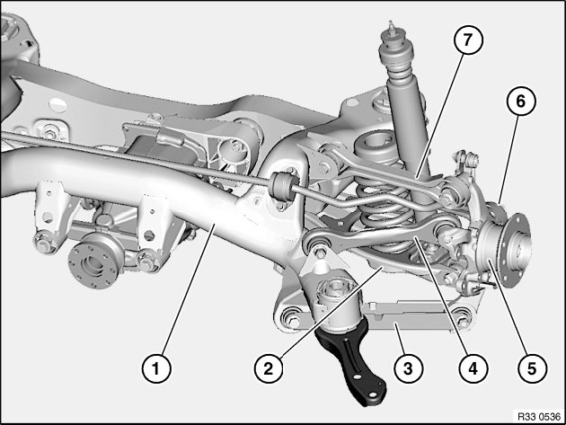

Differential Assembly: Adjustments
33 00 ... Rear axle: wheel/chassis alignment check must be carried out after the following work
A wheel/chassis alignment check must be carried out after the following work:
^ Release of following screw/bolt connections:
^ Camber arm to rear axle carrier / wheel carrier
^ Trailing arm to rear axle carrier / wheel carrier
^ Guide arm to rear axle carrier
^ Toe arm to rear axle carrier / wheel carrier
^ Control arm to rear axle carrier
^ Replacement of following parts:
1. Rear axle carrier
2. Camber arm / rubber mount / ball joint
3. Trailing arm / rubber mount
4. Guide arm
5. Wheel carrier / rubber mount / ball joint
6. Toe arm
7. Control arm